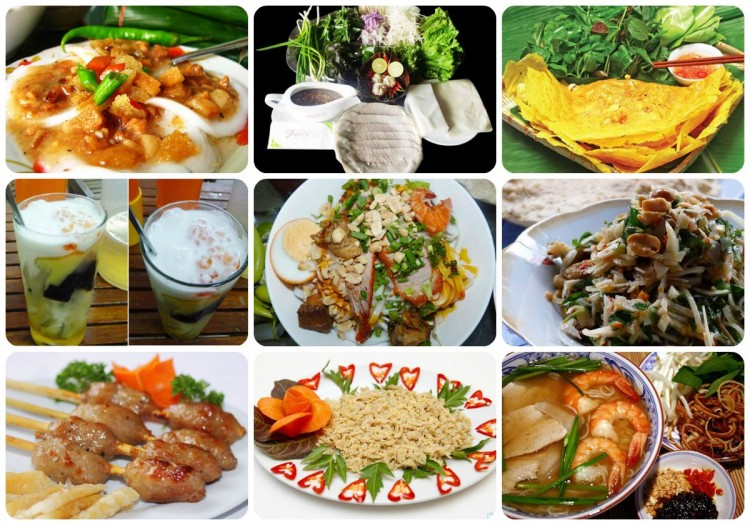

Những quán cafe nổi bậc nhất tại Đà Nẵng
Đà Nẵng là một trong những thành phố đẹp, đáng sống nhất tại Việt Nam. Ngoài những món ăn đặc trưng, Đà Nẵng được biết đến với rất nhiều điểm cafe nổi tiếng và thú vị. Sau đây chúng ta cùng ghé qua những quán cafe đẹp Đà Nẵng mà bạn không thể bỏ qua khi đặt chân đến đây.
1. Đà Nẵng Souvenir & cafe
Đà Nẵng souvenir & cafe – Quán cafe là một trong những quán café đẹp nhất Đà Nẵng. Nằm ngay trung tâm, vị trí thuận lợi – trên con đường Bạch Đằng chạy dài theo con sông Hàn Thơ mộng. Đây không chỉ là không gian cafe thoáng đãng, nhìn ra sông Hàn mà còn là địa điểm dừng chân, tham quan, mua sắm quà lưu niệm thú vị cho du khách và cũng là nơi tổ chức các hoạt động nghệ thuật của giới trẻ.
Địa chỉ quán Souvenir & café Đà Nẵng : 34 Bạch Đằng, quận Hải Châu
2. Cộng cafe
Quán cà phê bao cấp được coi như “đặc sản” của Hà Nội có mặt ở Đà Nẵng và nhanh chóng trở thành quán cafe đẹp tại Đà Nẵng nổi tiếng ở thành phố biển. Từng vật dụng trang trí, không gian kiến trúc của quán mang tới cho thực khách cảm giác về một thời xưa cũ, gian khó mà thân thương.
Địa chỉ quán café Cộng Đà Nẵng: 96-98 Bạch Đằng
3. Highland Cafe
Highlands Coffee là thương hiệu cafe ngon và nổi tiếng khắp Việt Nam. Ở Đà Nẵng có rất nhiều chi nhánh nhưng ở 74 Bạch Đằng dành vẫn luôn là một địa điểm tuyệt vời nhất dành cho những du khách là fan của Highlands Cafe hay là những du khách muốn đến đây để trải nghiệm không khí quán cafe đẹp Đà Nẵng với không gian thoáng mát nhìn ra sông Hàn.
Địa chỉ quán Highland Café Đà Nẵng : 188 Bạch Đằng, Đà Nẵng
4. Aroi cafe
Tọa lạc trên con phố Bạch Đằng nhộn nhịp, Aroi Dessert Cafe nhanh chóng chiếm được sự ủng hộ nhiệt tình của giới trẻ Đà Nẵng. Các bạn có thể ghé chân, thưởng thức một vài đồ uống lạ miệng trong ngày hè nóng nực. Đặc biệt, món bánh ngọt tại Aroi Dessert là thứ mà dân nghiện bánh không thể chối từ.
Địa chỉ quán café đẹp Aroi Đà Nẵng: 124 Bạch Đằng, Đà Nẵng
5. NamuNamu café
Coffee NamuNamu được bố trí và bày xếp theo phong cách “hơi Tây”, hiện đại, lịch sự. Không gian rất thoáng mát, rộng rãi.
Với đội ngũ pha chế chuyên nghiệp với phong cách làm việc chuyên nghiệp, những bạn ghé thăm quán không chỉ được tận hưởng 1 quán cafe không gian đẹp tuyệt vời tại Đà Nẵng mà còn cả những món thức uống có vị hấp dẫn
Coffee NamuNamu được thiết kế 3 tầng, với view sông Hàn tuyệt đẹp.
Địa chỉ café NamuNamu Đà Nẵng: 180 Bạch Đằng, Đà Nẵng
6. Cafe Green Plaza
Nằm trên tầng 20 của Green Plaza và mang tên gọi giống tòa nhà, quán cà phê này là điểm lý tưởng để du khách du lịch Đà Nẵng ngắm toàn cảnh thành phố. Vị trí quán nhìn thẳng ra bờ sông Hàn thơ mộng.
Đến Cafe Green Plaza ,du khách du lịch Đà Nẵng sẽ được thỏa sức ngắm nhìn toàn thành phố 2 bên sông Hàn. Vào những buổi tối cuối tuần, khi thành phố lên đèn và khi những con đường trở nên đông đúc với dòng người qua lại, bạn sẽ có những cảm nhận thật tuyệt khi được khám phá nhịp sống như thế ở tầm nhìn từ trên cao.
Địa chỉ: 238 Bạch Đằng, P. Phước Ninh, Quận Hải Châu
7. Mây Café
Chạy ngược cầu sông Hàn về phố, các bạn sẽ không khỏi giật mình khi nhìn thấy quán. Tầm nhìn vô cùng thuận lợi để thỏa sức thả mình ngắm sông Hàn cùng Mây cafe, một vẻ đẹp lung linh huyền ảo sẽ hiện ra ngay trước mắt bạn đấy.
Địa chỉ café đẹp Mây ở Đà Nẵng: 1B đường Lê Duẩn, Đà Nẵng
8.Cafe À la carte
Nằm trên tầng cao nhất của khách sạn A la Carte ngay bãi biển Mỹ Khê. Đây là quán cafe có view đẹp khó cưỡng lại với những ai yêu thích tìm kiếm cho mình những tấm hình cực chất về thành phố Đà Nẵng. Café A la Carte – Quán café không gian đẹp ở Đà Nẵng mà bạn không thể bỏ qua.
Địa chỉ quán cafe A la carte Đà Nẵng : 01 Đường Võ Nguyên Giáp, Đà Nẵng
9. Rafew Café
Rafew cafe Đà Nẵng với không gian lãng mạn hút khách ở Đà Nẵng là điểm đến mới lạ với bạn bè và du khách quốc tế.
Với kiến trúc mới lạ cùng không gian thưởng thức cafe thoáng đãng, Rafew Cafe là sự lựa chọn tốt nhất cho các tín đồ quán cafe đẹp Đà Nẵng.
Địa chỉ Quán café đẹp Rafew Đà Nẵng: 58 Hoàng Văn Thụ, TP. Đà Nẵng
10. Nia café
Nia café- không gian sinh thái đẹp nhất Đà Nẵng… Một vẻ đẹp được chăm chút nên đáng để… ngắm. Một vẻ đẹp hiện đại dù được bài trí bằng khá nhiều vật liệu thiên nhiên… Nia cafe còn khá yên tĩnh nên rất đáng để ngồi nghe gió trời, ngắm mây bay, ngó mận chín.Ở đây, buổi chiều có màu của những chiếc lá trúc rung rinh.
Địa chỉ Café Nia: 3/12 Phan Thành Tài, Hải Châu, Đà Nẵng
Những quán ăn ngon và nổi tiếng tại Đà Nẵng
Không phải ngẫu nhiên mà Đà Nẵng được mệnh danh là thành phố đáng sống nhất Việt Nam. Vùng đất này chinh phục trái tim của biết bao du khách đến đây nhờ phong cảnh tuyệt đẹp, khí hậu trong lành, người dân thân thiện và tất nhiên là không thể thiếu những món ăn đặc sản chỉ Đà Nẵng mới có. Nếu bạn đang lên kế hoạch cho chuyến đi của mình đến Đà Nẵng hay đơn giản là chỉ muốn có một Food Tour ăn ngập mặt thì hãy xem qua ngay những quán ăn ngon ở Đà Nẵng dưới đây nhé!
Danh sách những quán ăn ngon ở Đà Nẵng
1. Mỳ quảng ếch bếp Trang
2. Bánh xèo bà Dưỡng
3. Bánh tráng thịt heo Bà Hường
4. Bún Mắm Ngọc
5. Lan - Bún Chả Cá & Bún Cá Ngừ
6. Bún Bò Huế Bà Thương
7. Quán 59 - Làng Yaourt Muối
8. Bánh Canh Bà Đợi
9. Chè Xuân Trang
10. Gỏi cá Thanh Hương
11. Lẩu Bò Sáu Hưng - Ngô Quyền
12. Grill & Chill Bar - Buffet Trà Chiều
13. Quán Quen - Lẩu Riêu Bò & Lẩu Riêu Gà
14. Hải Sản Bà Cường

1. Mỳ quảng ếch bếp Trang
Là một trong những quán ăn ngon nhất ở Đà Nẵng phục vụ món mì Quảng ếch lạ miệng nên Mì Quảng Ếch Bếp Trang luôn đông nghẹt người dân lẫn du khách ghé đến thưởng thức. Với cách trình bày độc đáo, phần nhân và nước lèo được cho vào một cái thố sau đó dọn lên mẹt cùng với mì quảng và rau chắc chắn sẽ khiến bạn thích thú.
Không chỉ được dân địa phương yêu thích, mì quảng ếch Bếp Trang là quán ăn mà khách du lịch chọn làm điểm đến ẩm thực hàng đầu trong hành trình khám phá những món ngon Đà Nẵng. Nếu bạn chưa được thử những món mì quảng ngon đúng điệu bao giờ, nhất định phải đến Bếp Trang.
Địa chỉ: 24-26 Lê Hồng Phong, Phước Ninh, Hải Châu, Đà Nẵng
2. Bánh xèo bà Dưỡng
Một khi đã đi du lịch Đà Nẵng mà chưa thưởng thức qua những cái bánh xèo giòn giòn Bà Dưỡng thì quả là một thiếu sót lớn. Lớp vỏ bánh được chiên giòn rụm với phần nhân gồm tôm, thịt, giá đầy ụ bên trong vô cùng hấp dẫn. Điểm khác biệt của quán không gì khác ngoài loại nước sốt chấm cực kỳ lạ miệng mà bạn không thể tìm ở bất cứ nơi nào khác. Một đĩa bánh xèo đặc biệt ở đây chỉ 55k cho 4 cái, siêu rẻ!
Địa chỉ: 280/23 Hoàng Diệu, Bình Hiên, Hải Châu, Đà Nẵng
3. Bánh tráng thịt heo bà Hường
Thêm một quán ăn ngon ở Đà Nẵng không thể không kể đến chính là quán bánh tráng thịt heo Bà Hường. Một phần ăn bao gồm một đĩa thịt heo luộc, bánh tráng, bánh mướt, rau và mắm nêm để chấm. Thịt heo ở đây phải nói là thuộc dạng “big size” luôn, cắt lát vô cùng đẹp mắt, cuốn thêm với rau, bánh mướt vô cùng hết sẩy!
Địa chỉ: Triệu Nữ Vương, Hải Châu, Đà Nẵng
4. Bún mắm Ngọc
Khác hoàn toàn với món bún mắm ở miền Nam thường thấy, bún mắm ở Đà Nẵng có hình thức khá giống với món bún thịt nướng, chỉ khác là được thay bằng thịt heo quay và các loại nem chả, khi ăn thì chan lên chút dầu và mắm nêm cực ngon.
Địa chỉ: Đoàn Thị Diễm, Hải Châu, Đà Nẵng
5. Lan - Bún Chả Cá & Bún Cá Ngừ
Phải công nhận một điều Đà Nẵng chính là thiên đường vừa ăn ngon mà giá lại rẻ nữa. Cái tên tiếp theo góp mặt vào danh sách các quán ăn ngon ở Đà Nẵng chính là quán bún chả cá và bún cá ngừ Lan nức tiếng. Chả rất đậm vị cá, dai dai ăn rất đã, nước dùng thì vô cùng đậm đà, cho thêm chút hành ngò và tiêu bên trên càng làm tăng hương thơm cho món ăn.
Địa chỉ:424 Hùng Vương, Thanh khê, Đà Nẵng
6. Bún Bò Huế Bà Thương
Nước dùng ngọt thanh, thịt bò mềm ngon lại nhiều nên không phải ngạc nhiên khi quán bún bò bà Thương lại luôn tấp nập khách ra vào như vậy.
Địa chỉ:23 Trần Quốc Toản, Hải Châu, Đà Nẵng
7. Quán 59 - Làng Yaourt Muối
Đây là quán ăn vặt giá rẻ thích hợp cho những hội bạn đông người có thể ngồi cùng nhau vừa tám chuyện vừa nhâm nhi những món ăn vặt ngon miệng. Quán tuy nhỏ nhưng phục vụ khá nhiều món ăn lạ miệng như mít trộn, trứng cút chiên bơ, ram cuốn cải,...
Địa chỉ:59 Hải Hồ, Hải Châu, Đà Nẵng
8. Bánh Canh Bà Đợi
Xứng đáng là một trong những quán ăn ngon ở Đà Nẵng, bạn sẽ không thể nào quên đi hương vị bánh canh vô cùng đặc biệt ở đây. Những thực khách lần đầu đến đây chắc chắn sẽ không khỏi ngạc nhiên bởi bạn sẽ chỉ được phục vụ một tô bánh canh gồm tôm, chả và một mâm gia vị gồm bột ngọt, ớt, dầu, muối, hành lá,...để bạn tự nêm cho tô bánh canh của mình.
Tuy nhiên hương vị gốc mà quán chế biến sẵn vốn đã rất ngon rồi. Nước dùng vô cùng ngọt và thanh rất tự nhiên từ xương và tôm chứ không phải nhờ gia vị. Thêm vào đó bánh canh của quán được làm từ bột gạo nên dai dai sựt sựt ăn rất đã.
Địa chỉ:163 Phan Thanh, Hải Châu, Đà Nẵng
9. Chè Xuân Trang
Tuy chỉ phục vụ vài món chè truyền thống nhưng khi nhắc tới những quán ăn ngon ở Đà Nẵng, đặc biệt là những quán chè, không thể không nhắc tới Xuân Trang. Tuy là quán bình dân nhưng quán khá rộng rãi, thoáng mát, nhân viên lại nhanh nhẹn.
Địa chỉ:31 Lê Duẩn, Hải Châu, Đà Nẵng
10. Gỏi cá Thanh Hương
Đây là một trong những quán ăn ngon ở Đà Nẵng phục vụ món gỏi cá ngon lành mà bạn không nên bỏ qua. Quán có hai loại là cá sống và cá chín để bạn lựa chọn, cá sẽ được đem trộn với thính mè, khi ăn cuốn cùng rau sống, bánh đa và chấm với loại sốt tương gia truyền của quán.
Địa chỉ:50 Hồ Tương, Thanh Khê, Đà Nẵng
11. Lẩu Bò Sáu Hưng - Ngô Quyền
Nếu bạn không đến sớm thì rất có thể không tìm được chỗ ngồi tại quán bởi lẽ món lẩu bò tại đây đã quá nổi tiếng không chỉ đối với người dân Đà Nẵng mà còn cả khách du lịch.
Địa chỉ:1191 Ngo Quyền, Sơn Trà, Đà Nẵng
12. Grill & Chill Bar - Buffet Trà Chiều
Nằm ở tầng 18 của khách sạn Avatar tuy vậy Grill & Chill Bar phục vụ buffet bánh ngọt với một mức giá khá rẻ, chỉ 60k/người. Đến đây chắc chắn bạn sẽ say mê với vô số món bánh ngọt, trái cây tươi rói và các loại trà thơm lừng.
Địa chỉ:120 An Thượng 2, Ngũ Hành Sơn, Đà Nẵng
13. Quán Quen - Lẩu Riêu Bò & Lẩu Riêu Gà
Tuy phục vụ món ăn đặc sản Hà Nội nhưng với hương vị món ăn nơi đây bạn cũng không nên bỏ qua. Hai món ăn đặc sắc nhất bạn nên thử là món lẩu riêu gà lẩu riêu bò, nước lẩu ngọt thanh và khá nhiều đồ ăn, phải 4 người mới ăn hết một nồi lẩu đấy.
Địa chỉ:1397 Xô Viết Nghệ Tĩnh, Hải Châu, Đà Nẵng
14. Hải Sản Bà Cường
Được đánh giá là một trong những quán phục vụ hải sản tươi ngon nhất Đà Nẵng vì vậy bạn nhất định đừng bỏ lỡ cơ hội thưởng thức những món ăn ngon ở quán hải sản Bà Cường nhé. Hải sản ở đây được nuôi sống, khi bạn order thì quán mới bắt đi chế biến vì vậy không cần bàn cãi về độ tươi ngon nữa hen.
Địa chỉ: 36 Hoàng Sa, Thọ Quang, Sơn Trà, Đà Nẵng
Web du lịch Đà Nẵng ®
Nguyễn Tuấn Phương
Hồ Tấn Hiệu01203031730
Huỳnh Anh An